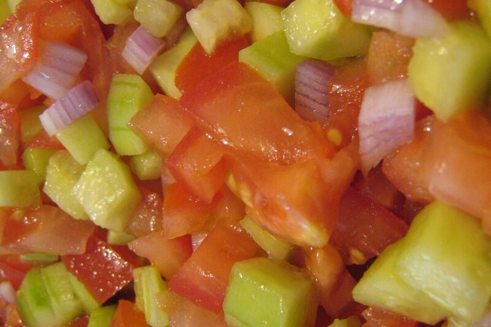

Vegetarian
Shirazi Salad (Salad-e Shirazi)
Finely diced cucumber, tomato, and onion with dried mint and lime -- Persia's everyday salad.
Vegetarian
Vegan
Gluten-Free
Dairy-Free
Nut-Free

Cucumber, tomato, and onion cut into a small, uniform dice, dressed simply with lime juice, olive oil, and dried mint -- named for the city of Shiraz, and served at nearly every Persian meal, from weeknight dinners to Nowruz spreads.
Ingredients
- 3 Persian cucumbers, finely diced
- 3 ripe tomatoes, finely diced, seeds and excess juice removed
- 1 small red onion, finely diced
- 2 tbsp fresh lime juice
- 1 tbsp extra-virgin olive oil
- 1 tsp dried mint, crumbled
- salt and black pepper to taste
Instructions
-
Draining excess tomato juice and seeds before dicing keeps the finished salad from turning watery.
-
10 min
Dried mint, not fresh, is traditional here -- it has a deeper, slightly musty flavor that fresh mint doesn't replicate.
Notes
- Shirazi salad is named for the city of Shiraz in southern Iran, and appears alongside nearly every Persian meal, including the Nowruz (Persian New Year) spread.
- Persian cucumbers are thin-skinned and nearly seedless -- if using a standard cucumber, peel it and scoop out the seedy core first.
- Keep the dice small and even; this isn't a chopped salad in the Western sense, and larger pieces change the texture entirely.
Nutrition Facts
| Nutrient | Amount |
|---|---|
| Calories | 70 kcal |
| Total Fat | 4 g |
| Saturated Fat | 0.5 g |
| Carbohydrates | 7 g |
| Fiber | 1.5 g |
| Sugar | 4 g |
| Protein | 1 g |
| Sodium | 90 mg |
| Cholesterol | 0 mg |
| Values are estimates based on standard ingredient data, not laboratory analysis. | |
Photo: Titanas, CC BY-SA 2.0. Cropped to 3:2 and re-encoded as WebP/JPEG for web delivery.
.jpg){kind=link}